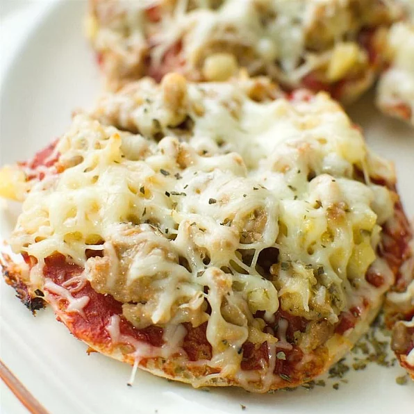

Pineapple Pizzas

Challenging the stigma of fruit on pies with bite-sized pizzas
Sliced English muffins are topped with an Italian sausage and crushed
pineapple mixture. These delicious mini pizzas can be made in advance,
frozen and reheated for snacks and parties.
Ingredients
- ½ pound (227g) ground Italian sausage
- ½ teaspoon garlic salt
- ¼ teaspoon dried oregano
- 1 cup (128g) crushed pineapple, drained
- 4 English muffins, split
- 1 (6 ounce / 170g) can tomato paste
- 1 (8 ounce / 227g) package shredded mozzarella cheese
Steps
-
Preheat oven to 350° F (175° C). Lightly grease a medium baking sheet.
-
Place ground Italian sausage in a large, deep skillet. Cook over medium
high heat until evenly brown. Remove from heat.
-
Drain sausage, and mix in garlic salt, oregano and crushed pineapple.
-
Arrange English muffin halves in a single layer on the prepared baking
sheet. Spread with tomato paste. Layer with the Italian sausage mixture.
Top with mozzarella cheese.
-
Bake in the preheated oven 10 to 15 minutes, or until cheese is melted
and lightly browned.
Nutrition Info
- Prep: 30 min
- Cook: 15 min
- Total: 45 min
- Yield: 8 mini pizzas
- Servings: 4
-
Per Serving: 541 calories; protein 28.3g; carbohydrates
45.6g; fat 28g; cholesterol 79mg; sodium 1517.6mg
Return to the Homepage